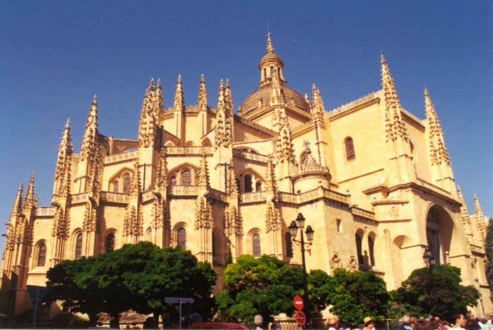

Segovia
Segovia es ciudad de antigua historia. Algunas esculturas zoomorfas de tosca factura confirman
unas remotas raíces celtibéricas; el magnífico Acueducto y otros muchos vestigios de la misma
época, su integración en el imperio romano; y las necrópolis visigodas halladas en lugares
cercanos, el asentamiento de pueblos germánicos.
La ausencia de restos arqueológicos musulmanes y la existencia de uno de los más ricos
conjuntos románicos de Europa apoyan la tesis de los historiadores que sostienen que la ciudad
fue abandonada tras la invasión islámica y repoblada, a partir de los años finales del siglo XI,
por cristianos procedentes del norte de la península y de allende los Pirineos, dirigidos por el
yerno del rey Alfonso VI, Raimundo de Borgoña, y por el primer obispo de su reconstituida diócesis,
el también francés Pedro de Agen.
El periodo final de la Edad Media fue tiempo de esplendor para Segovia: colonizó un amplio
territorio, sobre el que se extendió su Comunidad con límites a ambos lados de la Sierra; acogió
una importante aljama hebrea que al final hubo de confinarse en la Judería; sentó las bases de una
poderosa industria pañera que haría su fama en siglos posteriores; recibió la impronta del arte
gótico que dejó en ella monasterios y conventos notables; fue corte de reyes de la Casa de Trastámara y,
finalmente, el 13 de diciembre de 1474, sus gentes fueron las que proclamaron reina de Castilla a
Isabel la Católica.
Familias aristocráticas y orgullosos fabricantes de paños compitieron a lo largo de los siglos XVI y
XVII en la construcción de palacios urbanos a los que daban prestancia patios y jardines de líneas
renacentistas y delirantes blasones barrocos.
Pero la derrota de las ciudades castellanas en la Guerra de las Comunidades, en la que las milicias
segovianas, capitaneadas por Juan Bravo, tuvieron un papel destacado, y el desplazamiento hacia el sur
del centro de gravedad de la economía española a raíz del descubrimiento de América, iniciaron una
decadencia que no pudieron detener los Borbones ni con los Reales Sitios -La Granja, Riofrío- que
alzaron en los alrededores, ni con la Academia de Artillería que establecieron en la ciudad.
Al empobrecimiento subsiguiente, incontenible en un siglo XIX en el que Segovia supo de ocupaciones
francesas y carlistas, se debe en buena medida el que esta ciudad, una de las que mejor ha sabido guardar
entre sus gastadas piedras la esencia de Castilla, haya llegado hasta nosotros con su belleza apenas alterada
Leyendas
Leyenda de la Mujer Muerta
El perfil que dibuja sobre el cielo la silueta de la montaña conocida como la Mujer Muerta, es un capricho
geológico, interpretado desde el prisma popular y legendario de la siguiente manera: la esposa del jefe de
una tribu que vivía en el cerro del Alcázar, muerto aquél, crió a dos hermosos niños gemelos que, con el
tiempo, se enfrentaron para asumir el liderazgo del pueblo.
La madre, desesperada ante la posible lucha fratricida, ofreció a Dios su vida a cambio de la supervivencia
de sus vástagos.
Cuando éstos iban a pelear, una ventisca seguida de una formidable nevada -en pleno verano- se lo impidió.
Disipado el temporal, los hermanos comprobaron que una montaña cubría lo que hasta entonces había sido llanura.
Dios había aceptado el sacrificio de la mujer, cubriendo su cuerpo yacente con nieve.
La leyenda dice que dos pequeñas nubes se acercan al atardecer a la montaña: son los dos hijos que besan a su madre.
Leyenda del Acueducto
Según la leyenda, fue la pereza y no Roma la madre del Acueducto. Una muchacha que trabajaba como aguadora,
harta de arrastrar el cántaro por las empinadas calles de la ciudad, aceptó un trueque con el diablo: dispondría
del alma de la mujer si, antes de que cantara el gallo, el agua llegaba hasta la puerta de su casa.
Consciente de su culpa, la joven rezó hasta la extenuación para evitar el presagio. Mientras, una
tormenta se había desatado y el demonio trabajaba a destajo. De pronto, el gallo cantó y el Maligno
lanzó un alarido espeluznante: por una sola piedra sin colocar había perdido el alma.
La muchacha confesó su culpa ante los segovianos que, tras rociar con agua bendita los arcos para
eliminar el rastro de azufre, aceptaron felices el nuevo perfil de la ciudad. Un pequeño hoyo en la
superficie de las piedras señala, según esta leyenda, el punto en el que los dedos del diablo presionaron.
Leyenda de la conquista de Madrid por los segovianos y origen de los Nobles Linajes
Durante siglos, el gobierno de Segovia estuvo detentado por regidores que se dividían en dos grupos,
cada uno de ellos vinculado a uno de los Nobles Linajes de la ciudad que, según la leyenda, tienen su
origen en gloriosa gesta. Cuando el rey Alfonso VI se propuso la conquista de Madrid, llamó a las
milicias concejiles y las de Segovia, mandadas por los capitanes Fernán García de la Torre y Día Sanz
de Quesada, llegaron tarde al campamento. Pidieron alojamiento pero el rey, disgustado por la tardanza,
les respondió que se alojaran en Madrid. Los segovianos tomaron aquello como una orden, asaltaron las
murallas y ellos solos conquistaron la ciudad, enviando a decir al rey que viniese a aposentarse a
Madrid, donde ellos ya tenían aposento. Don Alfonso les concedió muchas mercedes a los dos capitanes,
cabeza de los Nobles Linajes de Segovia.
Leyenda del Cristo de Santiago
Este Cristo crucificado, hoy en el Museo Diocesano, procede de la desaparecida iglesia de Santiago y
fue el inspirador de una leyenda eclipsada por la que, en la época romántica, el poeta José Zorrilla
atribuyó al toledano Cristo de la Vega. Había en esta ciudad de Segovia -escribió su creador, Lorenzo
Calvete- una doncella muy virtuosa por cuyos amores andaba un mozo loco y perdido. Los desatinos del
mozo eran muchos y la doncella andaba temiendo cualquier desastre cuando un día, hallándose ésta
rezando ante el Cristo de Santiago, el mozo se acercó y le prometió que si consentía en entregarse
se casaría con ella. Sin embargo, una vez que la hubo conseguido, el mozo no mostró intención de
cumplir su promesa, a lo que la joven decidió acusarle ante el obispo. Preguntó éste si había algún
testigo y como la muchacha señalara al Cristo de Santiago, el obispo acudió a tomarle juramento,
cosa que el Cristo hizo, desclavando su mano y poniéndola sobre los Evangelios.
Leyenda de María del Salto
En las rocas que rodean La Fuencisla, las Peñas Grajeras, las voces más antiguas cuentan que quisieron
despeñar a una mujer judía, Esther, acusada falsamente de adulterio. En ese momento, la joven confesó
su fe cristiana y se encomendó a la Virgen, obrándose el milagro de alcanzar la tierra sin sufrir
ningún daño. Tras el suceso, fue bautizada como María del Salto y se consagró al servicio de la
Catedral de Segovia.
Leyenda del príncipe y la aya
El balcón central de la Sala de los Reyes muestra una cruz que rememora un suceso del que los siglos
han cuajado dos versiones. La más legendaria cuenta que, estando el infante D. Pedro de Castilla,
hijo de Enrique II el de las Mercedes, en el balcón en brazos de su aya, resbaló y cayó al vacío.
El aya, atemorizada, se lanzó tras el niño. La versión histórica apunta que el infante, de 12 años,
cayó mientras jugaba a la pelota con sus amigos.
Leyenda de la sala del cordón
Un cordón realza el techo de una de las salas principales del Alcázar. Según la tradición, el
relieve fue encargado por la reina Violante como lección de humildad para su esposo Alfonso X el
Sabio. Al parecer, su sabiduría y soberbia eran parejas, y llegó a afirmar que Dios hubiera hecho
bien en pedirle consejo antes de crear el Universo. Fray Antonio de Segovia le suplicó que confesara
su pecado, pero El Sabio, orgulloso, se negó. Entonces se desató una terrible tormenta, y un rayo
atravesó las estancias reales, matando a varios cortesanos. Fue entonces cuando el monarca dio su
brazo a torcer y cumplió su penitencia; su mujer aprovechó para encargar el friso, un amuleto
encargado de calmar la habitual ira de su esposo.
Leyenda de la Fundación del Monasterio del Parral
Al fondo de la pina calle que desde el río conduce al Monasterio del Parral hay una lápida con esta
inscripción: 'Traidor, no te valdrá tu traición pues si uno de los que te acompañan me cumple lo
prometido, quedaremos iguales'. Al viajero pueden extrañarle los términos en que está redactada
la inscripción en el camino que lleva a un recinto religioso. Cuentan que Juan de Pacheco, marqués
de Villena y valido de Enrique IV, fue un hombre que, por su ambición, tuvo muchos enemigos y que
uno estos le retó a duelo junto a la ermita de la Virgen del Parral. Bajó el de Villena el día
ajustado y se encontró con que su enemigo estaba allí pero no solo, sino acompañado por dos
hombres. Se sintió perdido, dirigió una plegaria al cielo y tuvo una reacción rápida, dirigiéndose
a su rival con la frase grabada en la lápida. Cada uno de los acompañantes pensó que era el otro
quien se había vendido y combatieron entre ellos mientras el de Villena lo hacía con el retador,
venciéndole. El marqués agradeció el haber salido bien de tan comprometido trance, transformando
la humilde ermita en amplio y rico monasterio.
Leyenda del Corpus Christi
Frente a la entrada de la Iglesia de Corpus, un lienzo narra la leyenda de la profanación de una
Hostia por los judíos. El sacristán de San Facundo entregó la custodia en la calle del Mal Consejo
(todavía existente), y los judíos quisieron echarla en una gran caldera hirviente. En ese momento
la Hostia empezó a volar por el aire y un terrible estallido provocó el hundimiento del edificio.
Desde entonces, en desagravio , se celebra la Fiesta de la Catorcena, por las catorce parroquias
que existían en la ciudad.
Leyenda de la calle de Muerte y Vida
El nombre de la calle de Muerte y Vida recuerda un episodio ocurrido en tiempos de las Comunidades,
cuando se acusó injustamente a un hombre de traición. Cuando le llevaban a prisión, una mujer que
residía en la calle arengó a los captores, pidiendo la muerte del apresado y arrojando una soga
desde su ventana. Finalmente, la prudencia prevaleció sobre la ira del populacho. La casa fue
derribada, pero la ventana se conserva en el Museo Provincial.
Catedral

La Plaza Mayor está enmarcada por los bellos pináculos del ábside de la Catedral, punto
de reunión vespertino de las cigüeñas. De estilo gótico tardño, comenzó a construirse en 1525,
con la colaboración desinteresada de los segovianos, bajo la dirección de los arquitectos de
la familia Gil de Hontañón. Sustituyó a la Catedral Vieja situada en los actuales jardines
del Alcázar y destruida durante la Guerra de las Comunidades en 1520.
En su exterior, al oeste, está la fachada principal, conocida como Puerta del Perdón, con la
escultura de la Virgen, obra de Juan Guas.
Junto a ella se extiende el Enlosado, un espacio utilizado actualmente para actividades culturales.
La torre, situada en el lado de la Epñstola, es uno de los elementos más llamativos por su gran
altura, y ha estado habitada hasta mediados del siglo XX por el campanero. Constituye un
privilegiado mirador sobre la ciudad, aunque sólo es posible acceder a ella con un permiso
especial del Cabildo.
Al sur se abre la Puerta de San Geroteo, primer obispo de Segovia y, al norte, la Puerta de
San Frutos, construida en honor del patrono de la ciudad a principios del s. XVII. Otro foco
de interés es el ábside, que linda con la Juderña Vieja, aderezado por contrafuertes y
pináculos de gótico florido, de piedra caliza, rodeando la gran cúpula.
La planta es de tres naves con crucero, con ábside semicircular en la cabecera y girola,
rodeada de capillas.
La grandiosidad y armonña de dimensiones define el interior. Observación pausada merecen las
vidrieras (s. XVI), el Retablo Mayor dedicado a Ntra. Sra. de la Paz (s. XIV), donada a la
ciudad por Enrique IV, la sillerña del coro (fines del s. XV) procedente de la Catedral Vieja,
los bellos órganos barrocos, la rejerña o el trascoro neoclásico que guarda la urna con las
reliquias de San Frutos.
Alberga 18 capillas que se encuentran en la girola y en las naves laterales, con importantes
pinturas y esculturas. En su interior destacan el Calvario románico situado en la entrada de
la Capilla del Sacramento; el trñptico de Ambrosius Benson y el retablo de la Piedad, de Juan
de Juni, en la Capilla del Santo Entierro, junto a la Puerta de San Frutos; y el Cristo Yacente
de Gregorio Fernández.
Un claustro de Juan Guas procedente de la antigua catedral románica y trasladado piedra a piedra
a su actual emplazamiento, precede a las salas del Museo Catedralicio. El Archivo Catedralicio
conserva más de 500 incunables, entre ellos el Sinodal de Aguilafuente, primer libro impreso en
España.
Alcázar

Su perfil aparece como un buque imaginario sobre el tajo en el que confluyen los ríos Eresma
y Clamores, festoneado por el escenario de ocres y azules de la llanura y la sierra. Le
anteceden unos cuidados jardines con el monumento erigido a los héroes de la Guerra de la
Independencia Daoiz y Velarde, obra del escultor segoviano Aniceto Marinas. A la izquierda
la Casa de la Química, construida en la época de la Ilustración y centro de investigación
de Louis Proust.
A ambos lados del castillo se nos ofrecen espléndidas vistas del Pinarillo (con el cementerio
judío) y la Iglesia de la Vera Cruz y Zamarramala.
El foso
Un profundo foso con puente levadizo abre paso a una fortaleza de ubicación privilegiada,
posiblemente habitada desde la época celta. El castillo, convertido en Alcázar -residencia
real- en el s. XIII, adquirirá su fisonomía gótica en los tiempos de Juan II y Enrique IV.
Su restauración ha sido continua tras un grave incendio ocurrido en 1862 y que a punto
estuvo de destruirlo definitivamente. Sin embargo, en 1882, reinando Alfonso XII, se
inició su reconstrucción, ya nunca abandonada por el Patronato del Alcázar, que ha ido
restaurando artesonados, frisos, retablos y muros.
En la silueta del monumento destaca la torrecita de Alfonso X El Sabio, en el ángulo
norte, desde la que este monarca estudiaba el firmamento, y la torre de Juan II, de
80 m. de altura, con bellos esgrafiados y doce torrecillas adornando su volumen. En
sus estrechas y frías prisiones pasaron días penosos nobles caídos en desgracia como
Don álvaro de Luna y otros imaginarios como Don Torcuato de "El Delincuente Honrado"
de Jovellanos.
Torre
A través de una empinada y extenuante escalera de caracol, el visitante puede acceder a
la parte superior de la torre, desde donde se divisa una bellísima vista de la ciudad,
así como los barrios de San Marcos y Zamarramala y la cantera de la que se extrajo
parte de la piedra empleada en la Catedral.
En el interior y alrededor del Patio de Armas -marco habitual de conciertos de música
de cámara- y del Patio del Reloj se sitúan las estancias. A la izquierda están las salas
dedicadas al Colegio de Artillería; a la derecha, el Palacio de los Reyes de Castilla,
núcleo principal del edificio. Sobresalen por su belleza la Sala de Ajimeces; de la
Galera, cuyo artesonado ha sido reconstruido recientemente; del Trono -con una llamativa
techumbre mudéjar, procedente de Urones de Castroponce (Valladolid) y obra de Xadel
Alcalde, autor de la que existía en la misma sala antes del incendio-; de la Chimenea;
del Cordón; de las Piñas; la Cámara Regia; el Tocador de la Reina y la Capilla en la que
podemos ver un retablo de la escuela castellana del primer cuarto del siglo XVI procedente
de Viana de Cega (Valladolid) y otro dedicado a Santiago Apóstol, así como la Adoración de
los Reyes, pintada en 1600 por Bartolomé Carduccio. De todas ellas, destaca la Sala de Reyes
con un extraordinario artesonado de hexágonos y rombos dorados y un original friso en el que
52 imágenes policromadas y sedentes representan a los Reyes y Reinas de Asturias, León y
Castilla desde Don Pelayo hasta Juana la Loca.
Acueducto
único y magnñfico, el Acueducto de Segovia es una de las más soberbias obras que los
romanos dejaron repartidas por su vasto imperio. Fue construido para conducir hasta Segovia
el agua de la Sierra, es sñmbolo heráldico de la ciudad y su construcción fue atribuida al
diablo por la leyenda.
Su solera
Las hipótesis apuntan al siglo I en la época de los Flavios, y también a la época de Nerva
o Trajano. La imposibilidad de datación exacta no impide que encabece la clasificación de
mejores obras de ingenierña civil en España. Sus 167 arcos de piedra granñtica del
Guadarrama están constituidos por sillares unidos sin ningún tipo de argamasa mediante
un ingenioso equilibrio de fuerzas. Obra extraordinaria, en la que la utilidad convive
con la armonña y la belleza, ha prestado servicio a la ciudad hasta fechas recientes.
A través de los siglos, apenas ha sufrido modificaciones.
Sólo durante el ataque contra Segovia dirigido en 1072 por el musulmán Al-Mamún de Toledo
sufrieron deterioro 36 arcos; los daños fueron restaurados en el siglo XV por Fray Juan de
Escobedo, monje del Parral. Desde antiguo, existen dos hornacinas que probablemente p
rotegñan a dioses paganos, sustituidas en tiempo de los Reyes Católicos por las imágenes
de San Sebastián y de la Virgen. Bajo las hornacinas existió una leyenda en letras de
bronce, relativas a la fundación del puente, de la que hoy sólo queda el rastro de la
inscripción.
El monumento desde su origen
Nacimiento en el Riofrño o la Acebeda hasta el primer desarenador: El recorrido puede
realizarse a pie partiendo desde el pantano de Puente Alta, (Km. 87 en la carretera
N-603, Madrid - Segovia por Guadarrama) siguiendo rño arriba hasta el azud, en la
ladera del Cerro de Cabeza Grande, y regresando por los esquileos de Santillana y Casa
Grande, para tomar la carretera La Granja-Segovia.
El Acueducto en Segovia ciudad: Partiendo de la carretera de La Granja continúa por la
llamada Casa de Piedra, un desarenador que eliminaba las impurezas del agua y regulaba
el caudal, obra de los siglos XV-XVI.
El Acueducto en San Antonio El Real: Allñ parten las primeras servidumbres de agua desde
el canal principal; los planos de esta merced de agua se conservan en el Archivo
Municipal de Segovia. A partir de aquñ la obra comienza a ser visible, punto que está
señalado por un monumento formado por sillares con el Acueducto labrado, fechado
probablemente en el s. XVI.
El segundo desarenador: Prosiguiendo junto al muro, se alcanza el segundo desarenador,
muy parecido al primero, con sillares de factura romana. En este tramo -muy reconstruido-
comienzan los arcos formando un solo piso de arquerñas.
El Azoguejo: En la plaza del Azoguejo el Acueducto presenta su máxima altura y los arcos,
a lo largo de una serie de 43, se hallan dispuestos en dos órdenes. Pueden observarse las
dos hornacinas, una de ellas ocupada por una imagen de la Virgen y las huellas de las
inscripciones con letras de bronce de las cartelas, cuya lectura no ha sido descifrada
totalmente.
El Postigo del Consuelo: Desde lo alto de la escalinata se observa todo el trazado de la
obra y una impresionante vista de la ciudad. Es el punto donde los arcos vuelven a
desaparecer, aunque los canales continúan por la zona alta de la ciudad, hasta el Alcázar.
La Plaza de la Reina Doña Juana: Bajo su suelo han aparecido unos registros de distribución
de agua. El canal se prolonga por la Plaza de los Huertos y la Plaza Mayor.
El desarenador de la Plaza Mayor: Galerña descubierta recientemente por la que discurre el
canal principal del Acueducto. Pozo para la eliminación de impurezas del agua, señala el
comienzo de una red de distribución para los barrios de la Juderña y las Canonjñas.
El Acueducto en el Alcázar: último punto documentado arqueológicamente y a través de un
escrito de 1504 de las Ordenanzas del Agua de la Puente de la Ciudad de Segovia, en
tiempos de la Reina Doña Juana.